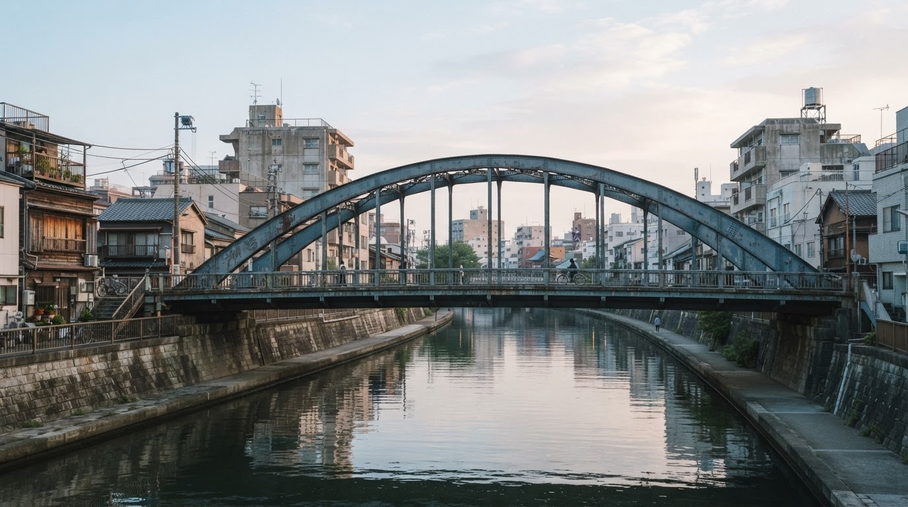

水上交通の拠点
神田川と隅田川の合流点に近い柳橋には、船宿が集まりました。 吉原や向島への船遊び、花火、月見、川上りなど、多くの人々でにぎわいました。
神田川と隅田川が出会う場所に育まれた、柳橋の物語。
柳橋は、江戸中期に架けられた歴史ある橋です。
柳橋は、神田川が隅田川に合流する河口部に架かる橋です。 江戸時代、現在の中央区側と台東区柳橋側を結ぶため、元禄11年、1698年に建設されました。
明治20年、1887年には鋼鉄橋となり、その後、関東大震災で焼失しました。 現在の橋は昭和4年、1929年に完成したものです。
重厚な意匠をもつ柳橋は、地域の歴史と景観を象徴する存在です。

神田川の下流、隅田川に入る直前に位置する橋として、水運や船遊びの拠点となりました。
柳橋は、江戸から明治・昭和にかけて、船宿や料亭で知られたまちでした。
神田川と隅田川の合流点に近い柳橋には、船宿が集まりました。 吉原や向島への船遊び、花火、月見、川上りなど、多くの人々でにぎわいました。
幕末から明治期にかけて、柳橋は新橋と並ぶ花柳街として知られ、 「柳新二橋」と称されるほどの人気を集めました。
かつての料亭、船宿、芸者衆の記憶は、今も町の細部や社寺、川沿いの風景に残っています。
町並みは変わっても、柳橋が育んできた「江戸の粋」「下町人情」「川辺の文化」は、地域の大切な財産です。 柳橋町会では、行事や地域交流を通じて、このまちの魅力を次世代へつないでいきます。
町会としての歩みを年表で紹介します。
柳橋町会が発足。初代町会長は稲垣平十郎氏とされています。
町会発足55周年記念式典・祝賀会が開催されました。
隅田川テラスを活用した、柳橋らしい春の行事として親しまれています。
柳橋町会創立70周年を迎え、記念祝賀会が開催されました。
マンション住民、昔からの住民、商店、事業者が協力しながら、安心で住みよい柳橋をつくっています。